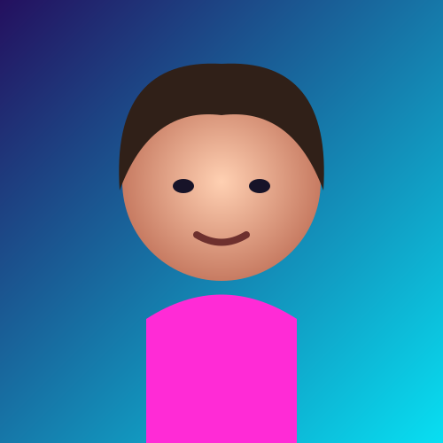
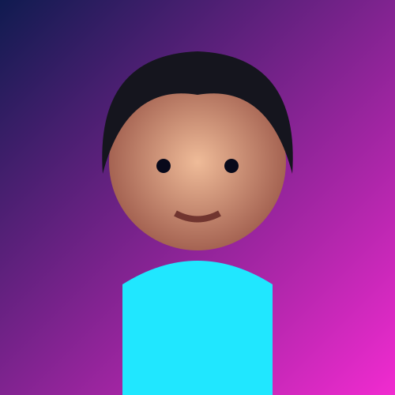

👤
Persona sintética
El rostro se crea a partir de patrones aprendidos y no pretende identificar a una persona concreta.
¿Y si una fotografía pareciera real, pero la persona nunca hubiera existido?
Explora rostros sintéticos, tecnología generativa, aplicaciones, riesgos y formas de analizar imágenes creadas con IA.

Una demostración de generación de rostros: una imagen puede parecer una fotografía aunque la identidad representada sea completamente sintética.
El rostro se crea a partir de patrones aprendidos y no pretende identificar a una persona concreta.
No necesitas introducir una fotografía para encontrar a alguien. El modelo produce una nueva imagen.
“Parece real” y “es real” son afirmaciones diferentes. Esa diferencia importa en la era de la IA.
El sitio actual señala StyleGAN3 para los rostros. Simplificando, podemos visualizar el proceso como cuatro etapas.
El modelo aprende estructuras, texturas, iluminación y relaciones visuales presentes en sus datos.
Los rasgos se organizan en un espacio donde distintas combinaciones pueden producir resultados diferentes.
Una semilla permite obtener una combinación concreta de características.
La representación se transforma en una imagen que puede parecer fotográfica.
Pulsa un rostro para ampliarlo. Usa filtros, favoritos o “Nueva selección”. Todo funciona desde el navegador.
La página no es solo lectura: prueba controles, descubre pistas y comprueba tus intuiciones.
Baraja los rostros y vuelve a explorar.
Compara categorías de forma visual.
¿Puedes detectar qué es IA?
Ambos pueden producir imágenes convincentes, pero el punto de partida y el uso pueden ser diferentes.
Crea una identidad visual que no corresponde a una persona real. Puede ser útil para prototipos, personajes o material educativo.
Manipula contenido relacionado con una persona real. Puede sustituir o alterar rostro o voz y plantea riesgos adicionales de engaño.
No existe una señal visual infalible. Contexto, procedencia y coherencia son tan importantes como los detalles.
Mira el rostro, decide y después revela la respuesta.

Que una imagen sea fácil de generar no significa que cualquier uso sea apropiado.
“Una cara puede parecer completamente real y, aun así, no pertenecer a nadie.”